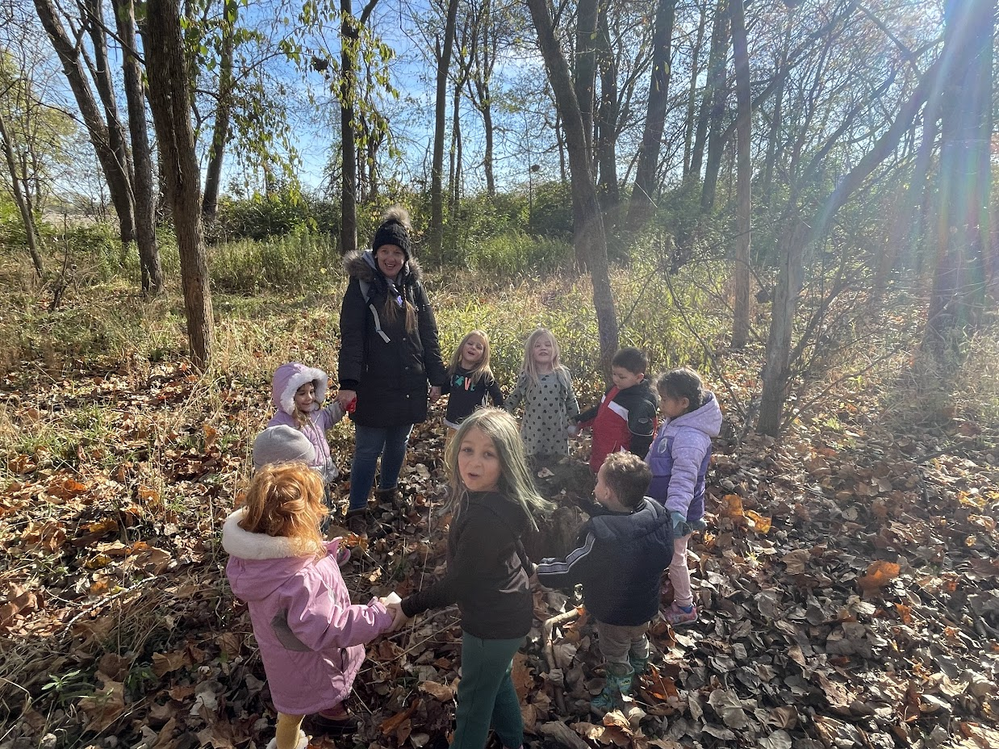

Hello and Welcome to Village Roots Collective! I’m so happy
you’re here! My name is Krystall DeBoy, but you can call me Mrs. K, and I will be your teacher this year. A
little about myself… I live in Hendricks County with my amazing husband Joe and our 2 beautiful children, Isaac
and Addison. We also share our home with our 2 cats, Max and Lucky. In my free time I love to ground myself with
the Earth. Nature is my happy and healing place☺ I’m excited for what’s to come and I look forward to getting to
know you and your child this year!
Experience

I started in the co-op world in 2013 as a parent/stay at home mom with my son. I joined the board as
Co-President and held that position until May 2016, when both of my kids went to public school full time. In
November 2016, I accepted a position in my children's school district working in Special Education with children
of all abilities until May 2018. In August of 2018 I became a co-op teacher and have been teaching ever since.
My Favorites
Color: Tie-Dye
Animal: Penguin
Drink: Sweet Tea
Candy: Anything sour
Food: Cheese & Pickles
Flower: Sunflower
Restaurant: McAlisters Deli
Store: Meijer & Menards
Movie: Alice in Wonderland (the original)
Holiday: Halloween & Christmas
Season: Fall
Obsession: Gnomes & Disney
Mrs. Jamie
Hello!
My name is Jamie McMahon. I am the Chief Executive Officer and
Executive Director of Village Roots Collective. That makes me sound really fancy and mature, but those who know me
well can tell you that, most of the time, I have more in common with our 5-year-old students than I do other
adults. The greatest joy of this work is being invited into a child's world of imagination, curitosity,
creativity, and fun. I am passionate about providing an environment in which kids are free to be their most
authentic selves, where they will be celebrated for their uniqueness and met with respect, admiration, and
encouragement. Children are whole humans, not smaller adults. At Village Roots, we focus on caring for who our
students are today, without adding pressure of expectation of who they will be tomorrow.
In my personal life,
I enjoy spending time with my husband, Brendan, and two kiddos, Addie & Walter. My hobbies include all things arts
& crafts, listening to true crime podcasts, and board games. My idea of a perfect night is sipping on a fresh
glass of iced tea as I watch a good movie under the stars from my cozy hammock.
 Hello and Welcome to Village Roots Collective! I’m so happy
you’re here! My name is Krystall DeBoy, but you can call me Mrs. K, and I will be your teacher this year. A
little about myself… I live in Hendricks County with my amazing husband Joe and our 2 beautiful children, Isaac
and Addison. We also share our home with our 2 cats, Max and Lucky. In my free time I love to ground myself with
the Earth. Nature is my happy and healing place☺ I’m excited for what’s to come and I look forward to getting to
know you and your child this year!
Hello and Welcome to Village Roots Collective! I’m so happy
you’re here! My name is Krystall DeBoy, but you can call me Mrs. K, and I will be your teacher this year. A
little about myself… I live in Hendricks County with my amazing husband Joe and our 2 beautiful children, Isaac
and Addison. We also share our home with our 2 cats, Max and Lucky. In my free time I love to ground myself with
the Earth. Nature is my happy and healing place☺ I’m excited for what’s to come and I look forward to getting to
know you and your child this year!